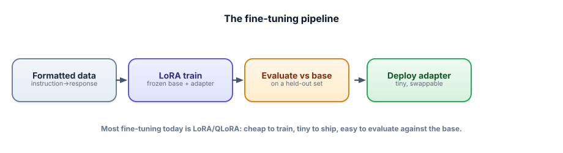

Capstone: a fine-tuned domain model
Fine-tuning means training a model a little more, on your own examples, to change how it behaves.
Here you teach a small open model one habit, such as always replying in a strict support format.
QLoRA (quantized low-rank adaptation) keeps the big model frozen and trains a small add-on called an adapter.
That makes it cheap enough to run on a free Colab GPU.
Then you prove it worked on examples it never saw, and check it didn't get worse at everything else.
Think of a skilled new hire learning your company's letter style. You don't send them back to school. You give them a clip-on cheat sheet and a few hundred example letters in the house style. You keep 40 letters aside to test them on, and you also check they can still do the rest of their job.
| In the picture | In the real system |
|---|---|
| The skilled new hire | The base model, Qwen2.5-0.5B, loaded in 4-bit and frozen |
| The clip-on cheat sheet | The LoRA adapter (r = 16): the only part trained, a few MB |
| Example letters in the house style | A few hundred instruction → response pairs, all in one format |
| The 40 letters kept aside | The held-out set, never used for training |
| Checking they can still do the rest of the job | General-ability prompts, base vs tuned |
Where the picture breaks. A person who learns a house style rarely forgets how to do sums. A model can lose general skills when you tune it hard on one thing (catastrophic forgetting), which is why the general-ability check is part of the project.
Going deeper
Fine-tune a small open model to adopt a specific behavior — a consistent format, tone, or narrow skill — using QLoRA on a free Colab GPU, then prove it improved without breaking general ability. This demonstrates Track 5 end to end and shows you can do the thing most candidates only talk about.
What you’re building
A LoRA/QLoRA fine-tune of a small model (e.g., Qwen2.5-0.5B) on a few hundred instruction→response examples that teach a behavior — say, replying in a strict support format. Then an evaluation comparing the fine-tuned model to the base on a held-out set, checking the target task improved and general ability didn’t regress. All free on Colab’s GPU.

In Colab: Runtime → Change runtime type → GPU. Then !pip install transformers peft trl bitsandbytes datasets. (Library APIs shift across versions — treat the code as the shape and adjust arg names if needed.)
Step 1 — Data: your behavior as instruction→response pairs
from datasets import Dataset
# ~200-500 clean, CONSISTENT examples in the exact format you want (Track 5.3)
rows = [
{"messages": [
{"role": "user", "content": "Customer: my order is late and I'm upset."},
{"role": "assistant", "content": "I'm sorry for the delay. Here's what I'll do: 1) track it now, 2) ..."},
]},
# ... your domain's voice/format, repeated consistently ...
]
train = Dataset.from_list(rows[:-40]) # hold out 40 for eval — NEVER train on these
held_out = rows[-40:]Step 2 — QLoRA fine-tune (free GPU)
import torch
from transformers import AutoModelForCausalLM, AutoTokenizer, BitsAndBytesConfig
from peft import LoraConfig
from trl import SFTTrainer, SFTConfig
model_id = "Qwen/Qwen2.5-0.5B"
bnb = BitsAndBytesConfig(load_in_4bit=True, bnb_4bit_quant_type="nf4",
bnb_4bit_compute_dtype=torch.bfloat16) # QLoRA
model = AutoModelForCausalLM.from_pretrained(model_id, quantization_config=bnb, device_map="auto")
tok = AutoTokenizer.from_pretrained(model_id)
trainer = SFTTrainer(model=model, train_dataset=train,
peft_config=LoraConfig(r=16, lora_alpha=32, task_type="CAUSAL_LM"),
args=SFTConfig(output_dir="adapter", num_train_epochs=3, learning_rate=2e-4))
trainer.train()
trainer.save_model("adapter") # a few MB — the whole "fine-tune"Step 3 — Evaluate vs. base (the part that proves it)
def format_score(model, examples):
"""Does the reply match the taught format? (e.g., starts with apology + numbered steps)"""
hits = 0
for ex in examples:
out = generate(model, ex["messages"][0]["content"])
if looks_like_target_format(out): hits += 1 # your format check (or LLM-judge)
return hits / len(examples)
# 1) target task: did the FORMAT improve on held-out examples?
print("format — base :", format_score(base_model, held_out)) # e.g. 0.40
print("format — tuned:", format_score(tuned_model, held_out)) # e.g. 0.92 ← improved
# 2) general ability: did it REGRESS? (catch catastrophic forgetting — Track 5.6)
general = ["Translate 'hello' to French.", "What is 12 * 8?", "Summarize: ..."]
print("general — base :", general_score(base_model, general))
print("general — tuned:", general_score(tuned_model, general)) # should NOT be much lower- You actually fine-tuned a model — most candidates have only read about it.
- You used QLoRA on a free GPU — demonstrating you know the modern, accessible method.
- You evaluated against the base on held-out data AND checked for regression — the rigorous, honest part.
- You can articulate why you fine-tuned (behavior, not knowledge) vs. when you’d use RAG instead (Track 5.1).
- The adapter is a tiny artifact you can show and explain.
1. Replace the format check with an LLM-as-judge (reuse your harness from 14.3) for richer quality scoring.
2. Demonstrate prompt-shrinking (Track 8.7): show the fine-tuned model needs a shorter prompt than the base to get the same behavior — quantify the token savings.
3. Try distillation (Track 5.1 deep dive): use a bigger model to generate training data for the small one.
4. Combine with RAG (14.1): fine-tune for format/tone, retrieve for facts — the production pattern.
▸ The interview narrative
“I QLoRA-fine-tuned a small open model on a few hundred clean examples to bake in a consistent support format, on a free GPU. The key parts: curated, consistent data (the real work), and an honest evaluation — I compared the fine-tune to the base on held-out examples, confirmed the target format improved a lot, and verified general ability didn’t regress (catastrophic forgetting). I chose fine-tuning because the need was durable behavior, not changing facts — for those I’d use RAG, and in production I’d combine both.” This proves you can execute fine-tuning and reason about when it’s the right tool — the senior framing from Track 5.
Your fine-tune improves the target format from 0.40 → 0.92. Before you call it a success, what must you also check?
For a fine-tuning capstone, what should you be ready to defend?
You can build, measure, agent-ify, and fine-tune. The final capstone makes it all fast and cheap enough to actually run. Next: a cost & latency-optimized chat service.
In one line: Teach one habit with a small add-on, then test on examples it never saw and check nothing else broke.